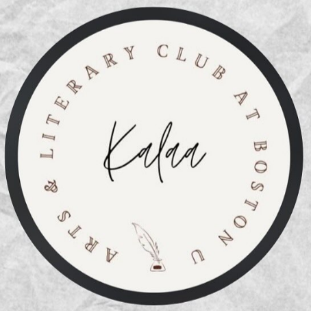

Clubs and Organizations
BU Arts and Literary Club
Member Since Fall 2023
Treasurer: MAR 2024 - PRESENT
Magazine Editor: SEPT 2024 - PRESENT
Our Magazine
Responsibilities:
- Complete Funding Requests for the Student Activities Office
- Host and plan meetings/events for the community
- Work alongside the rest of the E-Board to constantly improve the club